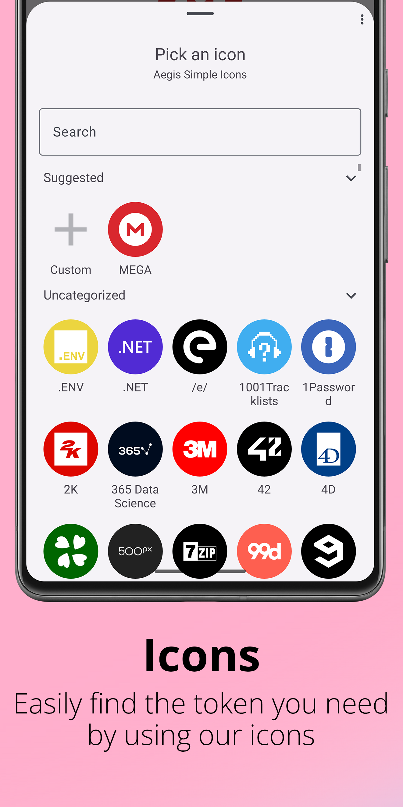

Aegis 深度盘点：从验证码生成到保险库安全，把所有能力面一次摊开
不少人把 Aegis 当成一个纯 TOTP 生成器用，其实它覆盖了验证码管理的完整链路——从条目录入、整理排序、图标个性化，到加密保险库的安全设计和备份迁移，每个环节都有可圈可点的细节。本文按能力域逐一盘点。
它是什么，为什么值得认真盘点
Aegis 是一个开源的两步验证管理器，它的官网上标注的核心职责是在本地生成一次性验证码（2FA code），帮你摆脱每登录一个服务就掏手机看短信或翻 Google Authenticator 的麻烦。但如果只用它的默认配置、录入几条 TOTP 密钥就完事，那你只用了它不到一半的能力。
这个应用从条目创建、日常整理、保险库加密到备份迁移，每个环节都有细致的设计。比如它支持两种主流算法（TOTP 和 HOTP）外加 Steam、Yandex、mOTP 等特殊类型；条目可以自定义图标、拖动排序、按分组筛选；保险库默认 AES-256-GCM 加密，一个文件装下全部密钥。对于已经在用 Aegis 但没深挖的用户，或者正在对比同类管理器想做选择的人，这篇盘点会比单独看功能列表有用得多。
能力域一：验证码生成——不止 TOTP 一种
两种主流算法，覆盖绝大多数场景
Aegis 对 TOTP（时间型）和 HOTP（计数型）两种 RFC 标准算法都支持。TOTP 是你在 Google、GitHub、微信等绝大多数平台上见到的那种——验证码每 30 秒自动刷新，手机时间对得上就能出对的码。HOTP 则是每次使用后才换码，常见于部分硬件令牌、老系统或特定企业场景。
两种算法各有使用注意。TOTP 的命门是时间同步——手机时间不准，算出来的码永远是错的。Aegis 在 3.3 版起做了两个贴心设计：验证码临近过期会变色提醒，3.4 版又加了触感反馈，让你在输码的最后几秒能察觉"这个码快不能用了"。HOTP 的坑则是计数器不能乱——同一密钥在两台设备上各自生成过，计数器就会错位，之后算的码跟服务端对不上，而且 HOTP 密钥不建议多设备共用。
少数派算法的兼容
除了 TOTP 和 HOTP，Aegis 还支持 Steam Guard、Yandex Key、mOTP（移动端 OTP）等特殊验证码类型。这些不属于两种标准算法，但在特定平台上是强制要求。Steam 的验证码是 5 位字母数字组合，Yandex 是时间型但算法有变体，mOTP 则是基于设备信息生成。Aegis 自动识别这些类型，用户手动添加时选对类型就能正常出码。
三种添加方式
安装包从Aegis下载拿，录入条目有三种方式：扫描二维码、手动输入密钥、从其他应用导入（支持 Google Authenticator、2FAS 等主流格式）。扫描二维码最省心，密钥、服务名、账号名一次识别；手动输入适合老服务或二维码扫不出来的场景；导入则是换机或换管理器时的迁移路径。
能力域二：条目整理与个性化——条目多了才显功力
刚用 Aegis 时条目少，所有条目挤在一个列表里也没什么。但当你同时管二十个以上服务的两步验证时，整理能力就成了日常效率的分水岭。
图标系统：三种来源
Aegis 的每个条目都可以配图标，让"找码"从读文字变成认图标。图标有三种来源：不手动设置时应用按服务名生成文字图标（首字母+配色）；从社区图标包里挑对应服务的现成图标（Aegis 自带多个图标包，还支持从第三方仓库安装）；或者从相册选一张自定义图片裁剪后作为条目图标。

图标会被压缩存储——3.3.4 版起统一缩放到 512×512，避免大图把保险库撑得过大或引发内存问题，所以不用担心选高清图，存储开销是受控的。图标作为条目数据的一部分，跟随备份和换机迁移。
排序：字母序还是手动拖动
顶栏的排序入口提供两种方式。字母排序按服务名的字母或拼音顺序自动排列，零维护成本，条目多时最省心；自定义排序则完全手动控制，长按条目进入拖动状态，把常用的服务拖到列表顶部，低频的沉底靠搜索定位。两种模式随时切换，切换不会丢失数据。
一个值得留意的点：排序、分组、图标解决的是不同维度的问题。排序管"谁在前面"，分组管"按场景切片"，图标管"一眼认出"。条目个位数时什么都无所谓，超过十几个先把分组和排序配好，效率差异立竿见影。
视图模式：列表还是块状
Aegis 提供标准列表视图和块状视图两种展示方式。列表视图信息密度高，适合条目多需要扫读的场景；块状视图图标更大、视觉更友好，配合自定义图标效果最佳。两种视图下排序规则一致生效——在块状视图里做的排序调整，回到列表视图同样成立。
能力域三：保险库与安全——一个文件装下全部密钥
理解 Aegis 的保险库（vault）概念，很多功能就一目了然了。应用把所有条目——每条的密钥、服务名、账号名、图标、分组——集中持久化成一个文件，每次增删改都是对这个文件的更新。
加密与否由你决定
保险库支持两种状态。加密状态（推荐）下，文件内容用 AES-256-GCM 整体加密，没密码谁也读不出里面的密钥；明文状态则跳过密码设置，文件内容可读。手机上有其他恶意应用或文件被拷走时，明文状态的密钥等于裸奔。初始化时设置密码即为加密状态，随时可以在应用设置里查看与修改加密设置。
文件在哪，为什么必须备份
保险库默认存在应用的私有存储目录里，普通应用无法触碰，卸载应用时会随之删除。你在导出或自动备份时指定的文件夹里看到的副本，才是灾难恢复时真正要靠的东西。应用支持自动定期备份，也可以手动导出到任意位置。
安全公理
Aegis文档里有一条值得记住的安全公理：保险库的安全性 = 密码强度 × 备份可用性 × 设备安全性。三者缺一：密码弱则加密形同虚设；没备份则手机一丢全部重来；设备本身中毒则一切本地防护都打折扣。
短板也要说
Aegis 并非完美，几个短板在选型时需要留意。
首先，备份机制依赖本地文件复制，没有内置的云端同步。这意味着换机时必须手动把保险库文件搬过去，而不是像有些管理器那样扫码即可同步。对于习惯多设备无缝切换的用户，这是一个不小的摩擦。
其次，HOTP 密钥不支持多设备共用。计数器一旦错位，两台设备上生成的码就都不对，只能删掉条目重新绑定。相比之下，TOTP 因为基于时间，可以安全地在多设备上添加同一密钥。
第三，社区图标包的覆盖度不是所有服务都好。小众应用的图标可能找不到，这时自定义图片是唯一出路，但裁剪和压缩增加了额外操作。
什么样的人该用它
综合以上盘点，三类人群会从 Aegis 中获得最大价值。
第一类是已经在用两步验证、同时管理十几个以上服务的重度用户。条目多了之后，排序、分组、图标这些整理工具的价值就会显现，Aegis 在这个粒度上的设计密度比同类产品更均衡。
第二类是在意本地加密的安全敏感用户。Aegis 的 AES-256-GCM 加密、单文件保险库设计、明文/加密状态的明确区分，在开源两步验证管理器中属于中上水准。
第三类是从 Google Authenticator 迁移过来的用户。Aegis 支持从 Google Authenticator 直接导入，迁移成本低，而且多了自定义图标、分组、排序等 GA 没有的整理功能。